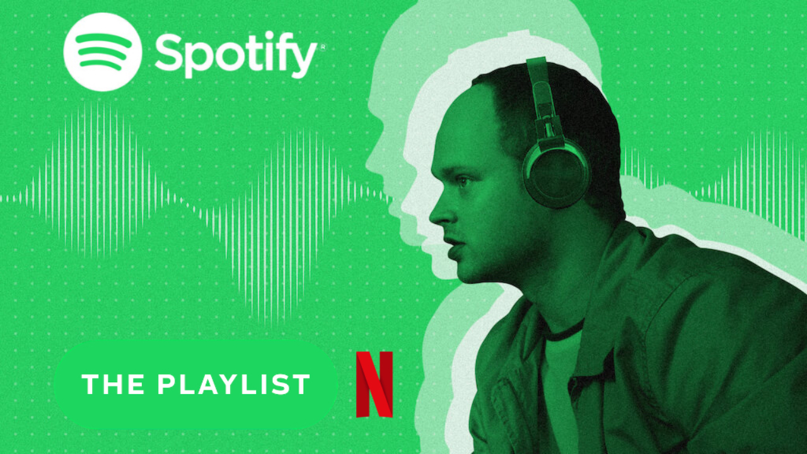

The first episode of Netflix's "The Playlist" provides viewers with a captivating insight into the origin story of one of the most prominent streaming platforms in the music industry – Spotify. As someone who has been an avid user of Spotify for several years, watching this episode allowed me to delve into the background of a service that has become an integral part of my daily life.
The episode commences with an introduction to Daniel Ek, the mastermind behind Spotify. Through interviews and archival footage, we are presented with his humble beginnings as a young music enthusiast in Sweden. Ek's passion for music resonates deeply as he recounts his experiences growing up, highlighting the impact music had on his life.This personal connection became a driving force for his vision of creating a platform that would revolutionize the way people consume and discover music.
What struck me the most about the episode was the dedication and perseverance displayed by Ek. It was inspiring to witness the numerous obstacles he encountered throughout his journey, from facing rejection by major record labels to dealing with piracy issues that threatened to derail his vision. However, Ek's unwavering determination to provide a legal and accessible music service never wavered. This tale of resilience is a testament to the commitment required to turn a groundbreaking idea into a tangible reality.
Beyond the narrative of Spotify's rise to prominence, the episode also delved into the impact of the platform on the music industry itself. It offered insights from artists, producers, and industry insiders who shared their perspectives on how Spotify altered the dynamics of music consumption. While some voiced concerns about royalty payments and the dwindling value of music, others acknowledged its role as a powerful tool for emerging artists to gain exposure. This debate shed light on the broader repercussions of technological advancements in the music landscape and left me contemplating the evolving relationship between artistry, commerce, and accessibility.